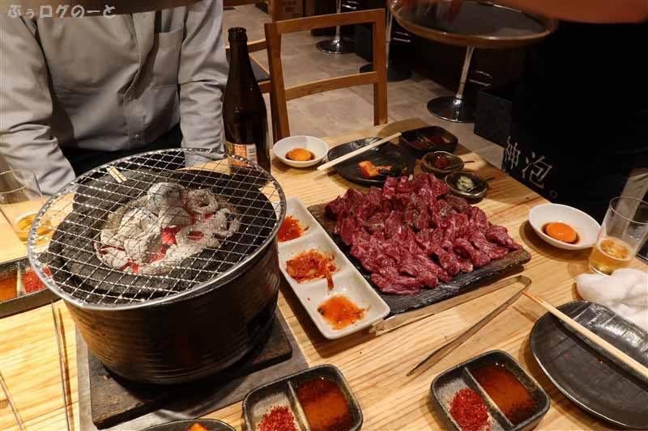
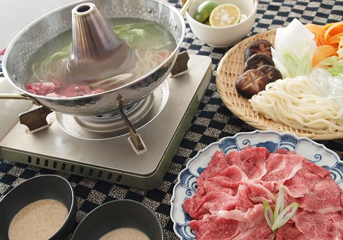
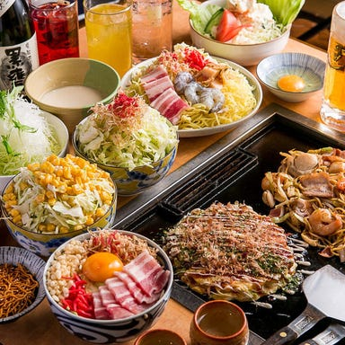

Products Offered
Gakuen will serve Japanese and Japanese-American fusion food, soft drinks, Japanese beverages, a variety of teas, cocktails made with Japanese liquors, sake varieties, shochu varieties, and soju varieties. The merchandise shop will sell Japanese snacks and beverages, manga, western comic books, anime and anime movie DVDs, Japanese stationery and cosmetics, seasonal anime merchandise, and merchandise for brands such as Ghibli, Dragon Ball Z, Sanrio, Ultraman, Kamen Rider, Power Rangers, Pokémon, Gundam, Nintendo, and Miffy. Shop will have a stand that provides free pamphlets advertising various Japan travel bundles of partnered traveling agencies.
Menu Concept
The menu will be designed to encourage a shared dining experience—such as that of a traditional Japanese izakaya—where dishes can be likened to appetizers. The kitchen will include fryers, gyoza grill, steamer, a large open-flame grill, small blacktop grill, reach in refrigerator, reach in coolers, cold bar, and steam table. Protein will include chicken, beef, pork, tofu, and seasonal fish. Cutlery will include dining forks and spoons, Japanese soup spoons, butter knives, steak knives, chopsticks, and children's cutlery. Tableware will consist of mostly clay items and will include small, medium, and large plates and bowls, shabu-shabu pots, serving plates, divided sauce plates, individual use Japanese BBQ charcoal grills, single countertop induction ranges, ice platters, small water glasses, clay pint beer mugs, cocktail glasses, wine glasses, double rocks glasses, Irish Coffee glasses, old fashioned glasses, clay sake sets, copper mugs.
Menu Item Examples
- Teriyaki Burger Sliders with Avocado
- Yakitori Chicken with Fondue
- Nori Butter Fries
- Oyakodon
- Bacon Jam Inari
- Grilled Cheeze Onigiri
- Chashu Nachos
- Yakisoba and Fried Chicken
- Ramen and Gyoza Combo
- Philly Spring Rolls
- Kanikama Fried Rice
- Popcorn Fried Tofu over Chili
- Pizza Stuffed Steamed Buns
All You Can Eat Specials
Five nights out of the week, Gakuen will have a different all you can eat specials. These are aimed at attracting business on slower nights out of the week and will occur Sunday night-Monday night during happy hour. Thursday and Sunday nights can be expected to be slightly busier than Monday-Wednesday and will therefore consist of kitchen-prepared items. Monday-Wednesday nights can be expected to be the slowest nights of the week and will therefore be interactive dining nights. Food preparation should begin early in the mornings with an employee designated for all you can eat items. Meat and fish should be placed in the walk-in cooler to thaw on the day before. Poultry should be thawed two days before and placed in brine the day before its use. For interactive dining items, ingredients should be cleaned, cut, and portioned. All you can eat nights will be as follows:
Sunday: Sushi Night
Kitchen will prepare a selection of nigiri and roll sushi. Sushi should contain slightly more rice than usual so that it will be relatively more satiating. Prepare fresh wasabi, teriyaki glaze, pickled ginger, and other toppings such as thinly sliced onions, Masago, tenkasu, and thinly sliced cheese, which can be served torched on sushi.
Monday: Yakiniku (Japanese BBQ) Night
Charcoal grills, replacement grates, and smoke vacuums above tables should be prepared. Orderable items will include various cuts of meat, marinated meat, tofu, shrimp, thick-cut vegetables, onigiri, and cheese fondue.
Tuesday: Shabu-shabu Night
Shabu-shabu pots and induction ranges should be cleaned, and functionality should be checked. Meat and vegetables should be sliced very thinly. Prepared broths will be rotated weekly but should always consist of four choices that include a spicy option, a mild option, and a vegetarian option.
Wednesday: Okonomiyaki
Induction ranges should be cleaned, and functionality should be checked. Pans should be cleaned and oiled. Dry and wet ingredients should be mixed separately and set aside to be mixed as needed. Ground beef should be cooked, and garlic should be roasted. Vegitables should be shredded, pork belly should be thinly sliced, and mochi blocks should be shredded and kept in a dry place.
Thursday: Dumpling Night
Dumplings should be folded and set aside for cooking as needed. Dumplings will include varieties of the following: Steamed buns, gyoza, shumai, soup dumplings, shui jiao. Fillings should be prepared the day before.